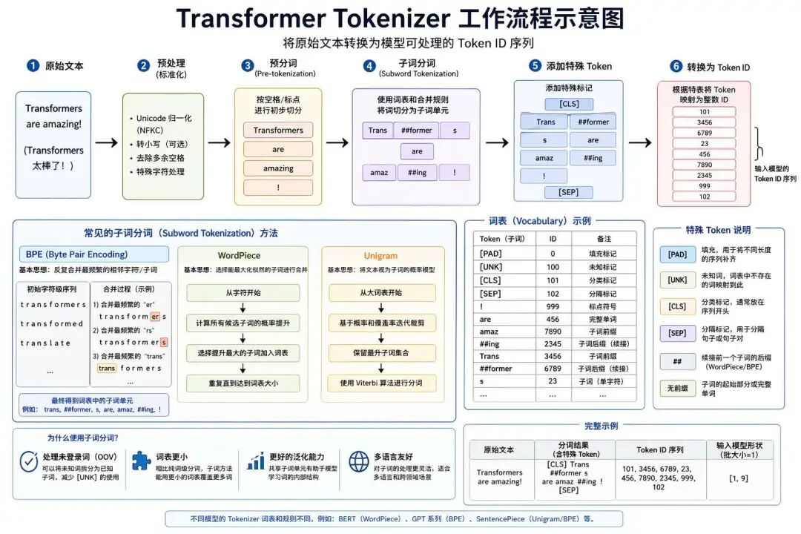
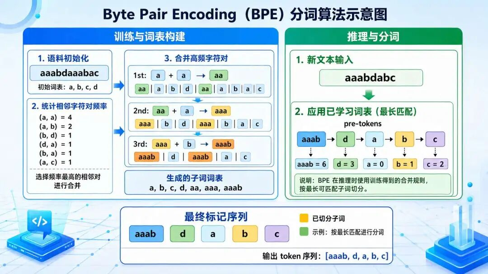
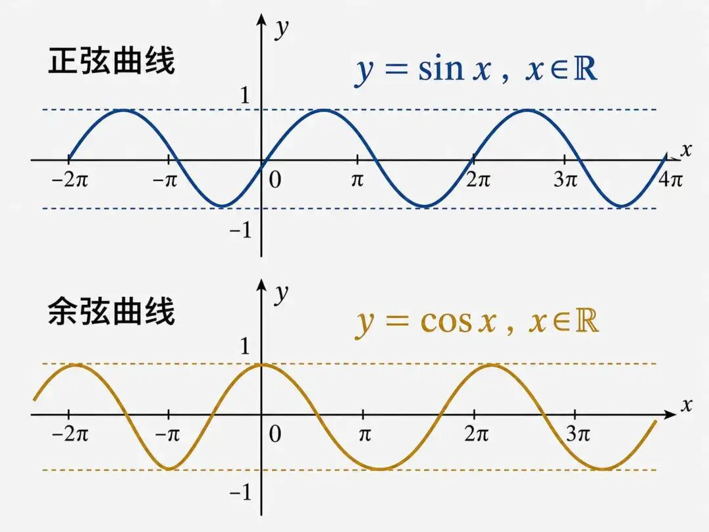
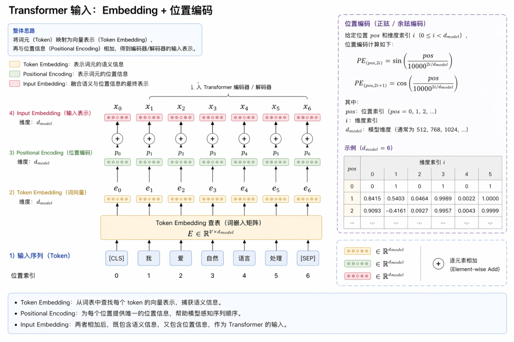

"AI在代码重构中是个好帮手，但它永远不懂'为什么'。"--马丁·福勒（Martin Fowler，软件开发大师）
这一讲，我们进入到Transformer的微观结构的讲解，深入分析transformer中的每一个模块：词表分词、位置编码、输入embedding、注意力机制（掩码自注意力、编码-解码自注意力机制）、残差连接、前馈神经网络等。
我们之前讲解过分词，这里重新来回顾一下什么是分词？其实不用想太复杂，就是字面意思："分开词汇"。既然这么简单，那为何还要拿出来单独讲？因为中华文化太博大精深了，分词跟文言文断句类似，断错了位置，意义也变了。
比如有这样一句话："小明打了小强，但自己也被老师批评了"，这句话要是让你断句，你会怎么做？
首先要说明的是中文与英文不同，词语之间没有天然分隔符。例如：
英文句子：Tom hit Jack, but he was also criticized by the teacher，英文句子中空格自然分隔了Tom/hit/Jack/but...等词语。
然而中文句子需通过分词技术将连续汉字序列转化为有意义的词单元，例如：小明/打/了/小强/，/但/自己/也/被/老师/批评/了。
分词的时候会遇到哪些问题呢？首先是歧义问题，比如"被老师批评"若切分为"被/老师批/评"，则语义错误，如"小明打了小强"若切分为"小明打/了/小强"，则又破坏主谓结构。
其次是新词无法识别，如网络新词"躺平"需通过统计或上下文推断，还有就是，人名、地名等需依赖规则库或实体识别模型。因此需要有一个比较好的分词器，保证分词不会产生歧义，以及能够自动推断新词的含义。
在自然语言处理（NLP）中，分词的目的正式术语为Tokenization，执行分词动作的分词器称之为Tokenizer，而Token 是文本的最小语义单元，可以理解为该语言模型处理文本的不可再分割的"原子单位"。

它可以是单词、子词（Subword）、标点符号、特殊标记等，具体取决于分词器（Tokenizer）的设计。
| Token 大类 | 核心功能 | 典型实例 |
|---|---|---|
| 普通文本 Token | 表示语言的基本单位 | "Hello"、"我"、"un-##ing"、"。" |
| 特殊功能 Token | 控制模型行为，完成特定任务 | [PAD]（填充长度）、[UNK]（未知词）、[CLS]（分类）、[SEP]（分隔句子） |
由这些所有Token组成的集合，称之为词表，词表的大小就是所有这些Token的总数。
我们来看一种非常具有代表性的大模型的词表结构，以加深理解。
BPE（Byte Pair Encoding，字节对编码）是一种广泛应用于自然语言处理（NLP）的子词分词技术，旨在通过动态合并高频字符对生成紧凑且语义丰富的子词单元。Transformer后续的大模型GPT采用的就是这种分词技术，以下是其核心原理、流程及特点的详细解析。

将文本拆分为基础字符（如字母或Unicode字符），并统计每个字符的出现频率。例如，英文单词"learning"初始拆分为l、e、a、r、n、i、n、g，中文"人工智能"拆分为单个汉字"人""工""智""能"
首先，算法会统计语料中所有相邻字符对的频率，例如可能发现"u"和"g"共现20次，成为最高频对。接着，将这对高频字符合并为一个新的子词（如"ug"），并更新语料库中的词汇表示。
然后，这一过程会重复迭代，不断合并新的高频对，直到词汇表大小达到预设值（如GPT-2的50,257）或无法继续合并为止。
新文本输入时，先拆分为基础字符，再按已学习的合并规则逐层合并，生成子词序列。例如，"bug"拆分为b和ug，而像"mug"这样的新词，通常会继续拆分为更小的已知子词，而不是直接被标记为[UNK]。这也是子词分词相较整词词表的重要优势之一。
定义：词表大小是分词器（Tokenizer）中所有可能「词汇单元」（Token）的总数。它决定了模型能识别的最小语义单元的数量。
示例：如果词表大小为6400，表示分词器可以将文本切分为6400种不同的Token。
{
"[PAD]": 0, # 填充标记
"[UNK]": 1, # 未知词标记
"[CLS]": 2, # 分类标记
"[SEP]": 3, # 分隔符
"我": 4, # 中文字符
"你": 5,
"Hello": 6, # 英文单词
"今": 7, # 中文子词
"天": 8,
...
}输入句子 "今天天气很好" -> 分词为 ["今", "天", "天", "气", "很", "好"] -> 转换为ID序列 [7, 8, 8, 9, 10, 11]。
{
"[PAD]": 0, # 填充标记
"[UNK]": 1, # 未知词标记
"[CLS]": 2, # 分类标记
"[SEP]": 3, # 分隔符
"我": 4, # 中文字符
"你": 5,
"Hello": 6, # 英文单词
"今": 7, # 中文子词
"天": 8
}词表大小 = Token的总数量 ，即字典中键值对的数量。
分词结束之后，我们就要进行embedding了，这个我们之前学过，其实就是类似word2vec，将词转换为向量，通过向量来捕捉词与词之间的语义关系。
那么词表和输入embedding层的关系是什么？
$$ 词表大小 = Embedding层的行数 $$假设词表大小为 V，Embedding维度为 $d_{model}$，则Embedding层的参数矩阵形状为 [V, $d_{model}$]。
若词表为6400，$d_{model}=512$，则 Embedding层参数总量为 6400×512=3,276,800（约330万参数）。
若词表为6400，$d_{model}$=512，则 Embedding层参数总量为 6400×512=3,276,800（约330万参数）。
| 模型 | $vocab_size$ | $d_model$ | Embedding参数量 | 总参数量 | Embedding占比 |
|---|---|---|---|---|---|
| GPT-4 | 50,257 | 12,288 | 618M | 1.8T | 0.03% |
| LLaMA-3-70B | 128,256 | 8,192 | 1.05B | 70B | 1.5% |
| Qwen-110B | 151,643 | 8,192 | 1.24B | 110B | 1.1% |
| TinyLlama | 32,000 | 3,072 | 98M | 1.1B | 9% |
那参数 $d_{model}$ 是做什么用的？ $d_{model}$ 是 Embedding 层的维度，表示每个词汇（Token）被编码为一个多少维的向量。这么说可能还是挺难理解的，但是你想想维度是什么意思？是不是一个事物的不同角度呀？
举个例子，身份证上的信息维度，如姓名、性别、出生地、职业等512个字段。维度越多，可以表示的含义就越丰富。
选择适中的 $d_{model}$（如512）是为了在有限资源下平衡模型容量与效率。通过训练，这些高维向量会逐渐学习到丰富的语言规律，成为模型理解文本的基础。
在Transformer架构中，$d_{model}$ 是模型所有层的统一维度：
这种一致性简化了模型设计，无需频繁调整维度，也便于参数共享和优化。
Transformer摒弃了RNN的循环结构，采用多头自注意力机制实现并行计算。然而，注意力机制不再采用时序机制，导致注意力机制在计算词与词之间的关联度时，无法天然感知序列顺序。
例如，句子"猫咬狗"和"狗咬猫"如果不加入位置信息，模型将难以仅凭同一组token的共现关系判断谁在前、谁在后，从而导致语义错误。因此给每个token设定一个位置编码至关重要。
位置编码的核心目标就是解决这个问题，向模型注入两种关键信息：
一个好的位置编码机制需要具备以下关键特性，我们通过具体句子案例可直观理解其价值：
首先要保证唯一性和确定性，每个位置的编码必须唯一且与序列长度无关，确保模型能精准区分不同位置。
例如在句子"小明打了小强"与"小强打了小明"中，若位置编码无法唯一标识"小明"在第1位和"小强"在第3位的差异，模型将无法理解动作方向性。
除了唯一性和确定性，模型还要能捕捉词间距的远近关系，并学习哪些依赖是局部的，哪些依赖即使跨越较长距离也依然重要。
长句"昨天我去了北京，它的天气真不错，但交通拥堵让人头疼，不过故宫的景色依然令人流连返"中，"北京"与"交通"相隔3个词，相关性应低于紧邻的"天气"与"不错"。
模型需处理远超训练长度的句子序列，且位置编码规则可自适应扩展。
若训练时最大序列长度为512，但推理时需处理2048 tokens的论文摘要，编码机制应避免崩溃。
编码过程需低计算开销，且与词向量语义信息兼容，不破坏原有语义。
例如在句子"苹果股价上涨了5%"中，"苹果"作为公司名，其语义向量应与"水果"差异显著，位置编码叠加后仍需保留这一特性。
满足这些要求的方法并不只有一种。不同位置编码方案，正是在"如何注入位置信息，同时尽量保留语义信息"这个问题上给出了不同答案。下面列举两种典型思路：
可学习位置编码：通过引入可训练的位置向量，并与词向量相加，让模型在训练过程中自动学习"位置"与"语义"之间的平衡，例如 BERT 采用的就是这种思路。
RoPE：不再把位置编码简单加到输入向量上，而是通过对查询向量和键向量施加与位置相关的旋转变换，把位置信息直接融入注意力计算过程之中。这样做的优点是，位置信息进入方式更自然，也更利于建模相对位置关系。
正式讲解正余弦位置编码之前我们先来复习一下高中时期学习的正余弦函数：

它们的值范围都是：[-1,1]，不会过大，也不会过小，比较稳定。
正余弦函数还有个重要的三角函数的和角公式：
$$ \sin(x + y) = \sin(x)\cos(y) + \cos(x)\sin(y) $$ $$ \cos(x + y) = \cos(x)\cos(y) - \sin(x)\sin(y) $$这个公式表明可以将位置的相对关系转化为了一种可学习的、与绝对起点无关的线性变换。
Transformer论文原文中的正余弦位置编码的公式定义如下：
$$ PE_{(pos, 2i)} = \sin\left(\frac{pos}{10000^{2i/d_{model}}}\right) $$ $$ PE_{(pos, 2i+1)} = \cos\left(\frac{pos}{10000^{2i/d_{model}}}\right) $$注释版：
$$ \underbrace{PE_{(pos,2i)}}_{\text{位置编码（偶数维度）}} = \sin\left( \frac{ \underbrace{pos}_{\text{位置序号}} }{ \underbrace{10000^{2i/d_{\text{model}}}}_{\text{频率分母}} } \right) $$ $$ \underbrace{PE_{(pos, 2i+1)}}_{\text{位置编码（奇数维度）}} = \cos\left( \frac{ \underbrace{pos}_{\text{位置序号}} }{ \underbrace{10000^{2i/d_{\text{model}}}}_{\text{频率分母}} } \right) $$其中：
这个公式这样的设计有什么好处呢？为何众多数学公式中偏偏选中了正余弦函数？
1）数值稳定性与有界性：
首先是数值的稳定性，当处理长序列时，位置索引pos可能非常大（例如成千上万）。如果直接使用位置索引，其数值会远大于经过归一化的词嵌入向量，导致位置信息"淹没"语义信息，并可能引发梯度爆炸或消失问题。
正余弦函数的值域被限制在[-1, 1]之间，无论pos多大，编码后的数值范围都是可控的，保证了与词嵌入向量相加时的数值平衡。
2）多尺度频率编码与层次化信息捕获：
其次是多频率的位置编码，这是正余弦编码最精妙的设计之一。公式中的 $10000^{2i/d_{model}}$ 项创造了一频率随着维度索引i增大而递减的机制。
这种设计使得位置编码能够同时从不同尺度表征位置信息，为模型提供了丰富的层次化位置特征。
3）内在的相对位置感知能力：
最后是正余弦函数的一个关键特性是，一个位置 $pos + k$ 的编码可以由位置pos的编码通过线性变换来表示。这源于三角函数的和角公式：
$$ \sin(pos + k) = \sin(pos)\cos(k) + \cos(pos)\sin(k) $$ $$ \cos(pos + k) = \cos(pos)\cos(k) - \sin(pos)\sin(k) $$这意味着，模型一旦学会了某个位置的编码，就可以相对容易地推导出其他相对距离（k）的位置关系。这为模型泛化到比训练时更长的序列提供了理论基础。
对位置感知与衰减性的补充理解多频率位置信息的理解
想象你戴着一块同时有秒针、分针、时针的手表。秒针快速转动记录每秒钟的变化，代表着高频，时针缓慢转动记录整天的时间，代表着低频。
Transformer的位置编码机制正是通过类似原理，用不同频率的正余弦波组合，让AI模型同时感知词语的局部语法和全局语义。
假设你的词向量由多个二维"小箭头"组成，每个小箭头对应一个齿轮。
这样一来，模型既能看清语法细节，又能把握整体逻辑。
再进行一个案例解析：句子"小明打了小强，但自己也被老师批评了"
假设词向量维度为512维，前64维高频，后448维低频：
高频维度（如第0-63维）
高频维度的作用是捕捉"小明"和"打"的主谓关系（位置0和1），"打"和"小强"的动宾关系（位置1和2），具体表现为：
低频维度（如第64-511维）
低频维度主要作用是理解"小明被批评"与前半句的因果逻辑（相隔5个词），以及整句话的教育主题。具体表现为：
有了位置编码和输入embedding，这两者怎么协同工作呢？因为这两者都是矩阵，而且维度一致，transformer的方法是对这两者直接相加。为何这么做呢？

首先是语义嵌入的是强信号，词嵌入向量通常通过大规模语料训练，其数值幅度显著大于位置编码（例如词嵌入范围为±1，位置编码范围为±0.1），这使得相加后的向量仍以语义信息为主导。
其次是多头自注意力机制发挥了作用，模型并不是显式地把相加后的向量"拆分"为语义和位置两个部分，而是在后续的线性变换、注意力计算和参数更新过程中，逐步学会如何利用其中的语义信息与位置信息。
最后是训练过程中的反向传播参数更新机制，模型会通过梯度下降不断调整词嵌入矩阵和注意力权重，使得相加后的向量既能保留语义特征，又能更好地表达顺序关系。
通过对句子分词构建注意力机制的原子单元，位置编码负责提供注意力机制的时空感知能力，而输入embedding将token映射到高维语义空间，正是这种多层次的信息奠基，使得多头注意力能像交响乐团般协调运作--每个乐手（注意力头）既遵循总谱（分词结构），又精准把握节拍（位置编码），更用不同乐器（子空间embedding）奏出和谐乐章。
位置编码：位置编码的本质，是给模型补上"顺序感"。因为 Transformer 的自注意力机制本身并不天然知道谁在前、谁在后，所以必须额外注入位置信息，模型才能区分"词出现了什么"和"词按什么顺序出现"。
语义信息：在 Transformer 里，词向量负责表达"这个 token 是什么"，位置编码负责表达"这个 token 在哪里"。前者是内容信息，后者是顺序信息。两者结合后，模型才能既理解词义，又理解语序。
可学习位置编码：可学习位置编码是一种"把位置也当成参数来学"的方法。它不是人工规定每个位置该长什么样，而是让模型在训练中自己学出第1个位置、第2个位置、第3个位置分别应该对应什么表示，因此属于一种数据驱动的位置表示方式。
RoPE（旋转位置编码）：RoPE 的核心思想，不是把"位置"当作一个额外向量直接加进去，而是让向量本身随着位置发生规则性的旋转。这样，位置信息就不是附着在外面的标签，而是直接嵌入进注意力计算过程里，使模型更自然地感知相对位置关系。